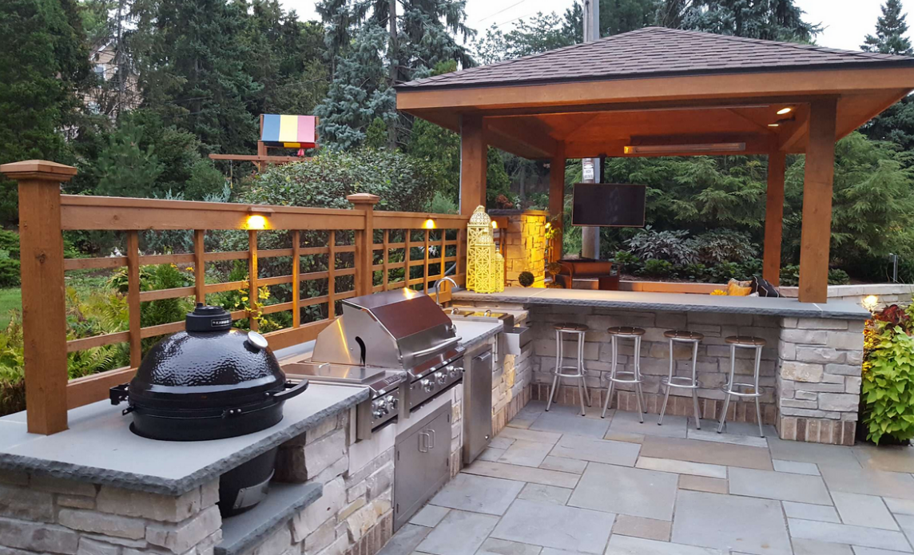

BBQcode · Санкт-ПетербургЛетняя кухня.
Летняя кухня.
Для вашего участка.
Проектируем и оснащаем летние кухни по России. Грили, барбекю, тандыры и комплексы под казан подбираем под вашу задачу.
Выбрать летнюю кухню
ПРИМЕРЫ РЕШЕНИЙГотовить.
Готовить.
И отдыхать на улице.
Рабочая поверхность, гриль и хранение объединяются в одну кухню. Рассмотрите варианты и обсудите размещение, оборудование и исполнение под свой участок.
Обсудить кухню